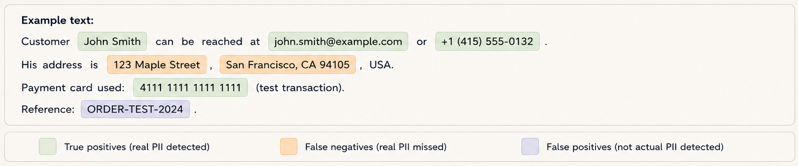
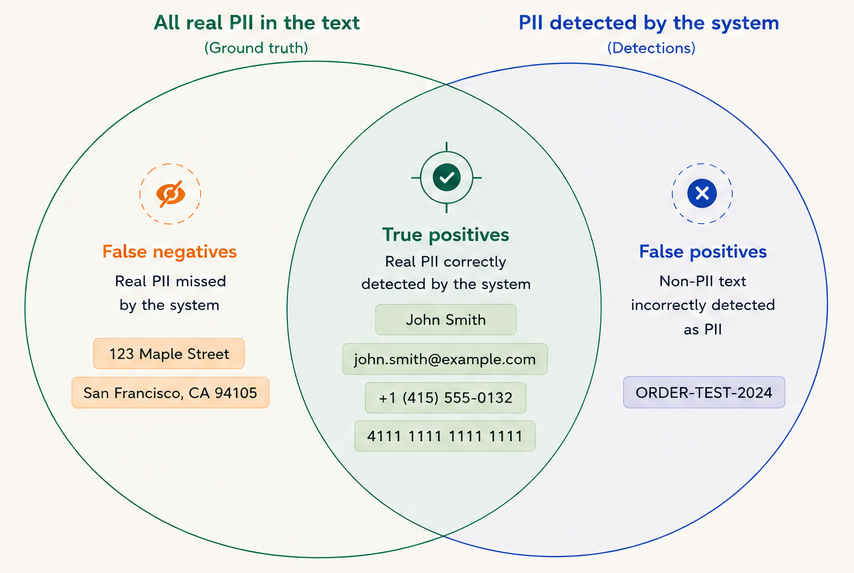

Understanding PII Detection Effectiveness
At first glance, it may seem straightforward: the more PII a given tool detects in a text, the better. And this is broadly true. But the reality of PII, PHI, and other sensitive-data detection is more nuanced, because detectors can be wrong in more than one direction.
The first direction that comes to mind is that the detector may fail to detect all PII present in a given text. The second is false positives: things that are not PII, but that the detector marks as PII. In practice, both happen at once: some sensitive data is detected correctly, some non-sensitive data is detected as sensitive, and some sensitive data is omitted even though it should have been found.
Because PII detection can be wrong in more than one direction, you need more than one number to describe a detector’s quality. These are the metrics to look at.
Precision
Say the detector found sensitive data in a given text. But what share of the detected data is actually sensitive? And what share of the text spans marked as PII are false positives? These questions are answered by precision.
For example, precision of 90%, or 0.9, means that 90% of detected PII instances are in fact PII. It also means that 10% of detections are false positives.
Recall
When measuring only precision, a detector may have precision of 99%. That sounds great, but we need to remember that this is 99% of what it found, not 99% of all PII present in the text. A detector may be 99% precise, while finding only half of the PII in the text.
This is where another metric comes in: recall. Recall measures what share of all PII in a given text was found. For example, recall of 80% means that 80% of PII in the text was detected, while 20% was missed.
Precision vs Recall
Precision and recall are two metrics used to measure detection effectiveness. Improving recall often means accepting more false positives, which lowers precision. Improving precision may increase the number of false negatives, which reduces recall.
Example
Let’s take a look at the following text, where true positives, false positives, and false negatives are marked.

How does it all relate to each other? The answer is shown in the diagram below:

The more true positives, and the fewer false positives and false negatives, the better. Therefore, the higher both precision and recall are, the better. So the ideal target would be 100% precision and 100% recall, right? In practice, such numbers are hard to achieve, even for humans.
Generally, we want balanced detection, where both precision and recall are as high as possible. But there are cases where we care more about precision than recall, or the other way around.
For example, in systems that generate alerts about sensitive-data leakage and send them to humans for review, precision matters a lot. Otherwise, the detector may trigger a large number of false alarms. These alerts become hard to verify at scale, and they can undermine trust in the detector.
On the other hand, we may want to remove as much PII as possible, even at the cost of more false positives. In that case, false positives may be less harmful than failing to detect sensitive data that should be removed for privacy or compliance reasons.
Conclusion
It is crucial to know both the precision and recall of the detection tool you use, and to understand your own use case. This allows you to choose a tool that best fits your needs.
How does Voidwall look in this context? Due to the nature of its underlying technology, primarily regular expressions and dictionaries, it usually offers very high precision and slightly lower recall. We will show the results of our measurements in the next blog post. Stay tuned!